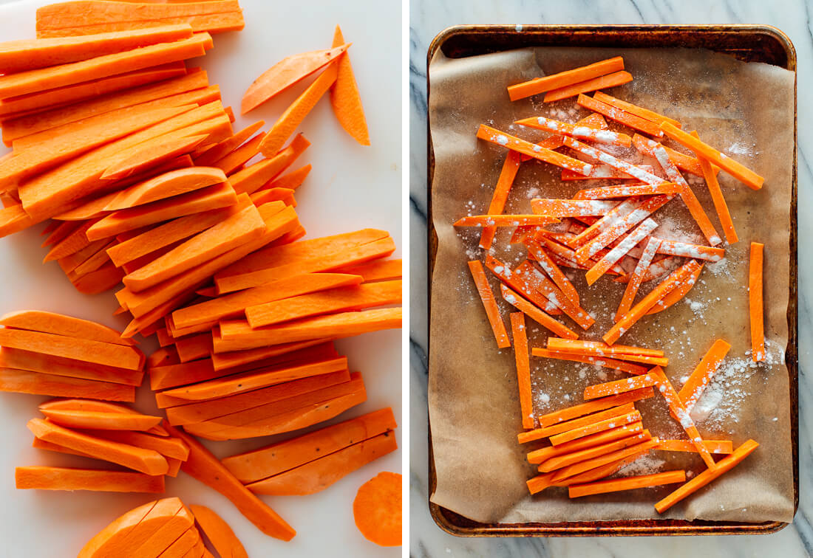
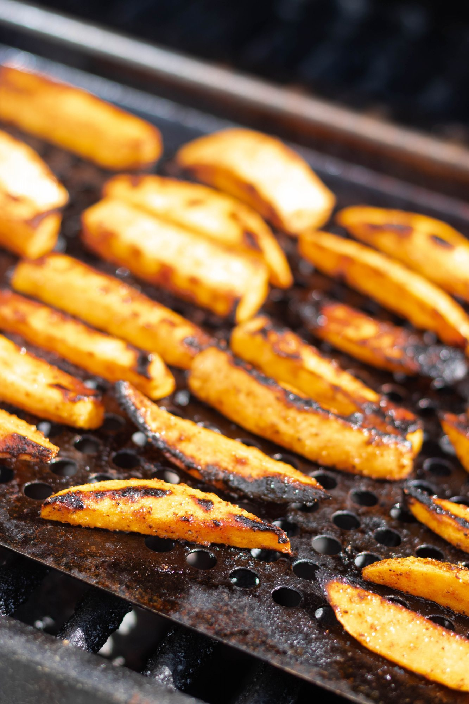

Grilled Tequila Lime Sweet Potato Wedges
A savory treat for the snack-loving programmer
The first time I had Kinders Tequila Lime Sweet Potato Fries was in college in my hometown. A lot of school athletes would get sandwiches at this well-known local bbq spot, which I did not care for, until I tried it without any other option. I've gained many-a-pound since then.

Photo credit: Kinders
What You'll Need:
- 2-3 small sweet potatoes
- 3 Tablespoons olive or neutral oil
- 2 teaspoons Kinder's Tequila Lime Rub
Instructions
- Scrub sweet potatoes under running water, dry and cut lengthwise into 8 wedges. 
- Place wedges in a bowl and combine with oil and Kinder's Tequila Lime Rub
- Preheat grill, if using charcoal grill, set up for direct & indirect cooking.
- Grill sweet potato wedges on medium low heat, flipping every 5 minutes, for about 20 minutes, or until soft.
- Remove from grill. Serve hot.
